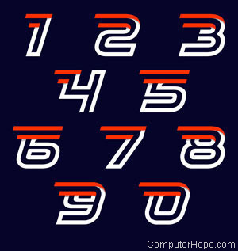
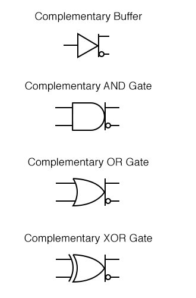

Codage des entiers en base b
Convertir un entier écrit en base 10 dans n'importe quelle base
b>=2.
En particulier savoir convertir un entier en binaire (base 2).
En particulier savoir convertir un entier en hexadécimal (base
16).
correction
|
Codage des entiers relatifs
Connaître le principe du codage de l'information à partir des nombres entiers naturels.
Coder les entiers relatifs en binaire signé et connaître les inconvénients de la méthode.
Coder les entiers relatifs avec la méthode du complément à 2 et connaître les avantages de cette méthode.
correction
|
Codage des nombres reels (flottants)
Coder des nombres réels en binaire
Prendre conscience des erreurs possibles et des effets que cela peut occasionner.
Découvrir la norme IEE754 pour coder les nombres réels.
correction
|

les Booleens
Savoir ce qu'on appelle les booléens.
Déterminer les tables de fonctions booléennes.
Découvrir les portes logiques et comment elles sont construites avec des transistors.
Comprendre comment un microprocesseur additionne bit à bit.
correction
|

Les outils de base de la programmation en python
Savoir ce qu'est un algorithme.
Connaître les bases en Python (types, affectations, instructions séquentielles).
Utiliser les instructions conditionnelles et les boucles.
Utiliser les fonctions
correction
|
Codage de textes
Savoir ce qu'est le code ASCII et savoir coder ou décoder un texte au format ASCII.
Savoir ce que sont les normes ISO 8859 (tables "latin") et savoir coder ou décoder un texte au format ISO 8859.
Savoir ce qu'est la norme ISO 10646 (UTF-8) et savoir coder ou décoder un texte au format UTF-8.
correction
|
Classes de base (python)
Utiliser les tuples
utiliser les listes
utiliser les dictionnaires
correction
|
Traitement de donnees en listes avec python
Convertir une table de données csv en liste Python.
Trier/filtrer les données d'une liste avec Python.
Fusionner des données de listes avec Python.
correction
|